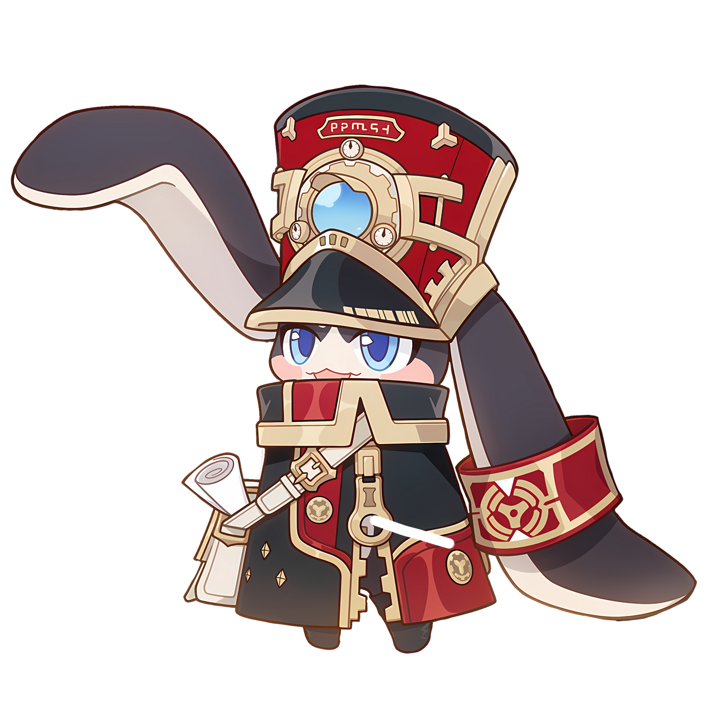

Honkai: Star Rail información, wiki, news, tier list, builds y más
Honkai: Star Rail
Honkai: Star Rail sigue el estilo de juego de los juegos de rol japoneses clásicos: los jugadores construyen una alineación de personajes y controlan un equipo de cuatro en combate por turnos. Los elementos de exploración de mundo abierto y mazmorras están presentes, con múltiples mecánicas, incluido el sistema gacha, heredado del RPG de acción Genshin Impact de HoYoverse. El juego está ambientado en un universo de ciencia y fantasía en el que la humanidad sigue los caminos de seres llamados Eones.
Eventos


Ultimos Articulos


Galeria